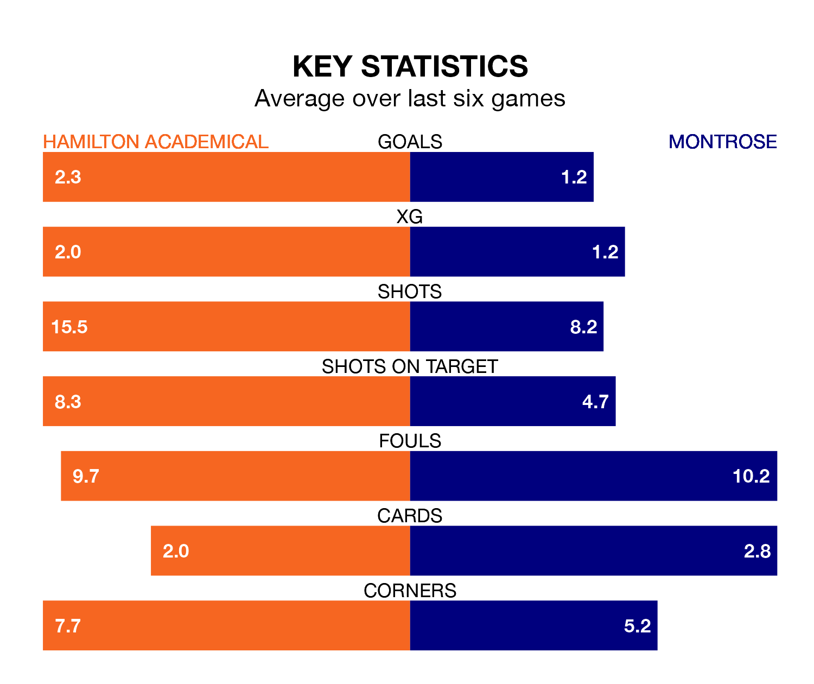

Hamilton Academical host Montrose in Saturday's match at the Fountain of Youth Stadium looking to bounce back from defeat last time out in League One.
The Accies, who sit second in the league after 20 games, fell to a 0-2 home defeat to Cove Rangers on January 13.
They face a Montrose side who also lost their last match, a 1-0 defeat to Stirling Albion, and who sit fourth in the table.
With 43 goals in 20 games so far this season, Hamilton Academical are the league's second-highest scorers with 2.1 goals per game. And they are conceding fewer than average, letting in 13 goals at a rate of 0.7 per game.
Montrose, meanwhile, are below average scorers, with 1.4 goals per game, compared to a league average of 1.5. They have conceded 1.6 goals per game.
With Ryan Fulton between the sticks, the Accies can rely on one of the league's safest pair of hands. He has kept six clean sheets in his 12 appearances this season, and only one other 'keeper – Falkirk's Sam Long – has been able to prevent the opposition scoring on more occasions in League One.
In the Gable Endies's net, Cameron Gill has three clean sheets in 20 games. He has conceded a goal every 60 minutes, more than twice as often as the 148 minutes between goals for Fulton.
The home side are in reasonable form in League One, with three wins and two draws from their last six games.
With a win and three draws over that period, the visitors' form is worse – they have taken six points from 18, compared to Hamilton Academical's 11.
Over the last two years, Hamilton Academical and Montrose have played each other twice. Hamilton Academical won both of them.
Their last meeting was on October 28, when Hamilton Academical won 3-0 away.
Updated: 09:07 (UTC), 24/01/24